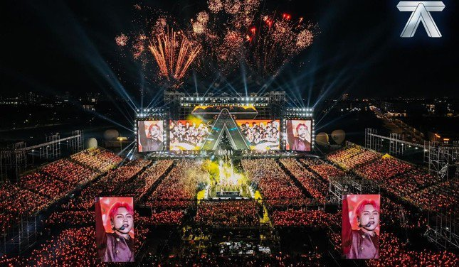

Sở Văn hóa nói về 2 show Anh trai
Sở Văn hóa và Thể thao TPHCM khẳng định 2 sự kiện âm nhạc "Anh trai say hi" và "Anh trai vượt ngàn
chông gai" có quy mô không thua kém quốc tế.
Chiều 24/10, tại cuộc họp báo định kỳ về tình hình kinh tế - xã hội, Sở Văn hóa và Thể thao TPHCM đã trả
lời báo chí về cơn sốt 2 concert "anh trai" diễn ra vào ngày 19/10.
Trả lời câu hỏi đã cân nhắc, dự phòng ra sao để phòng tránh những tiêu cực phát sinh trong quá trình
thực hiện các concert Anh trai say hi và Anh trai vượt ngàn chông gai, đại diện Sở Văn hóa và Thể thao
TPHCM cho biết đã trao đổi với đơn vị tổ chức chương trình về việc phối hợp chặt chẽ với chủ địa điểm tổ
chức để tuân thủ các quy định về hoạt động nghệ thuật biểu diễn.

Concert Anh trai say hi thu hút rất đông khán giả
Sở Văn hóa và Thể thao TPHCM khẳng định chủ địa điểm tổ chức biểu diễn nghệ thuật phải chịu trách nhiệm
tuân thủ quy định về hoạt động kinh doanh, điều kiện an ninh, trật tự, an toàn xã hội, phòng, chống cháy
nổ, môi trường và các quy định khác.
Đối với những chương trình biểu diễn có quy mô lớn, tập trung đông người, Sở Văn hóa và Thể thao TPHCM
thường xuyên phối hợp cùng các sở, ngành liên quan kiểm tra, giám sát trước và trong thời gian tổ chức
chương trình.
"Với các chương trình lớn đã diễn ra ở TPHCM thời gian vừa qua, công tác đảm bảo an ninh, trật tự… được
các địa phương, doanh nghiệp và sở, ngành phối hợp tốt", Sở Văn hóa và Thể thao TPHCM nhận định.
Theo Sở Văn hóa và Thể thao, vừa qua cả nước nói chung cũng như TPHCM nói riêng đã diễn ra nhiều sự kiện
âm nhạc quy mô, tầm cỡ do chính các nhà sản xuất Việt Nam thực hiện. Các sự kiện âm nhạc quy mô lớn,
chuyên nghiệp cùng với sự đầu tư về cơ sở vật chất phục vụ hoạt động văn hóa tầm vóc quốc tế kỳ vọng
giúp TPHCM phát triển hơn nữa.
Các sự kiện trên là dấu mốc khẳng định TPHCM là một trong những trung tâm âm nhạc, điện ảnh nói riêng,
trung tâm công nghiệp văn hóa của cả nước nói chung, góp phần đóng góp cho sự phát triển của thành phố
cũng như đáp ứng nhu cầu văn hóa tinh thần của người dân và bạn bè quốc tế.
Sở Văn hóa và Thể thao TPHCM cho rằng để có thể mời và đáp ứng yêu cầu của các nghệ sĩ tên tuổi của thế
giới, công tác tổ chức cần phải vận hành một cách chuyên nghiệp.
Những năm gần đây, thành phố tập trung xây dựng những mô hình âm nhạc với kỳ vọng trở thành biểu tượng
mới của khát vọng Việt. Một trong những sự kiện tiêu biểu mang tính bước ngoặt đối với việc xây dựng
thương hiệu của TPHCM là Lễ hội Âm nhạc quốc tế TPHCM Hò dô (HOZO), tổ chức lần đầu năm 2019. Thành công
của lễ hội cho thấy việc xã hội hóa lễ hội âm nhạc là một hướng đi đúng của TPHCM trong việc tổ chức một
lễ hội nghệ thuật quốc tế.